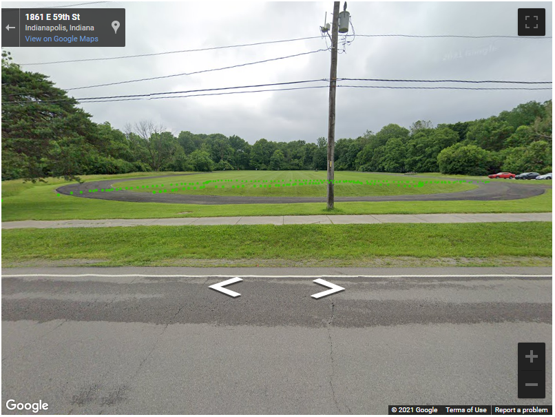
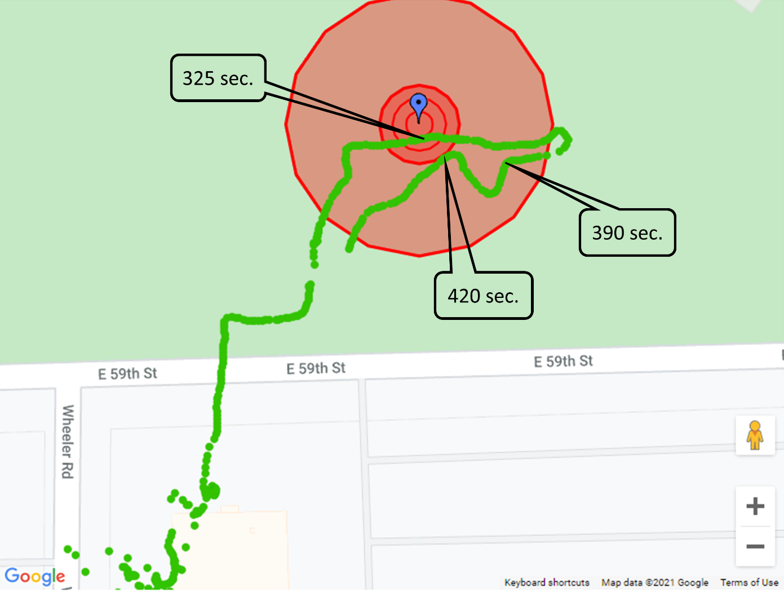
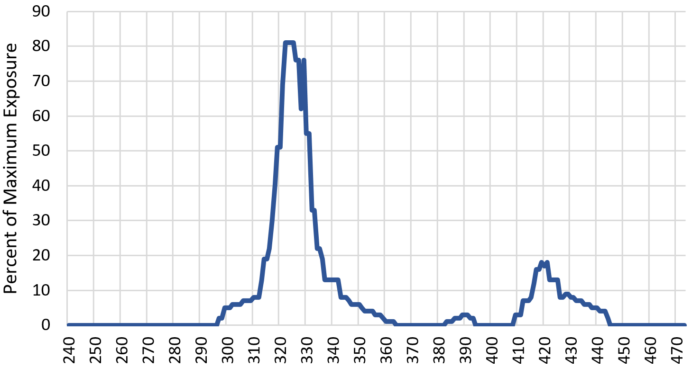
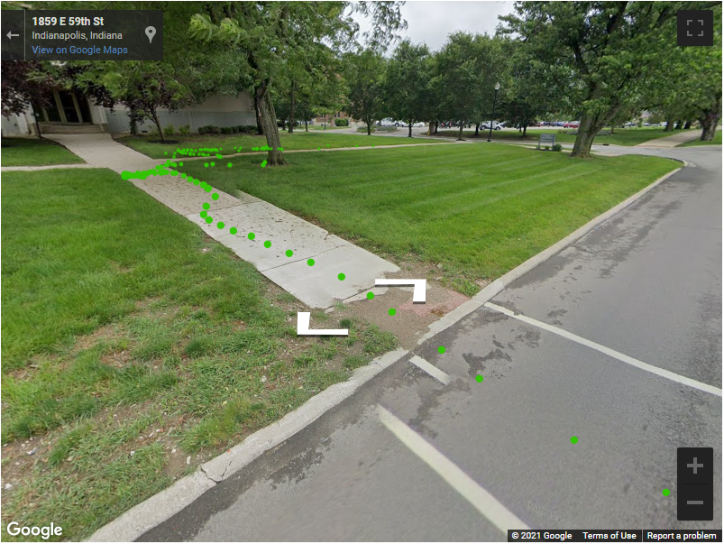

Large Scale Hazmart Sensor Simulator
CellPodium was arward a phase 1 SBIR grant (1R43OH012129-01) to develop a hazmart sensor simulator that can realistically reflect large scale hazard spills.
The simulator is based on GPS, very easy to use with no training required.
It is inexpesnive and is purely based on the mobile browser available in any handheld.
Phase I efforts (1R43OH012129-01) focused on assessing the field exercise requirements of instructors of HAZMAT workers and responders, and empirically verifying that GNSS can satisfy the spatiotemporal resolution requirements of realistic exposure simulation.
Cell Podium prototyped the five aforementioned major components, and instructors at CPHWD and EMI evaluated them in the same setting in which they conduct field exercises.

The figure to the left shows the Google street view of an EMI test site used in one of the evaluations.

Using the instructor web page, EMI Training Specialist Justin Schuller positioned a mock gas leak (figure to the left; the blue pushpin indicates the leak, and the concentric red circles are the threat zones). With his mobile phone’s browser set to the
sensor simulation page, Mr. Schuller then walked from his office across the road onto the test site, with the objective of entering and exiting the exclusion zone twice. The sensor simulator calculated the exposure levels, displayed them,
and relayed them with Mr. Schuller’s GNSS position (green bread crumbs in Figure 4b) in real-time to the database. The instructor screen also displays all this activity in real time in different ways: the Google maps birds-eye view (Figure
4b),

a time graph of the sensor readings themselves (Figure 4c), and the Google street view. The time graph shows how Mr. Schuller entered the exclusion zone, passed close to the hazard at 325 seconds (reaching near maximum exposure), and continued past the
origin (decreasing exposure) until his exposure reading returned back to 0, indicating he had left the exclusion zone. He then turned around and went through the exclusion zone a second time, but more along its periphery.

The breadcrumbs in Figure 4c illustrate the sub-meter precision of the GNSS geolocation (Mr. Schuller avoiding a different hazard: goose droppings on the walkway).